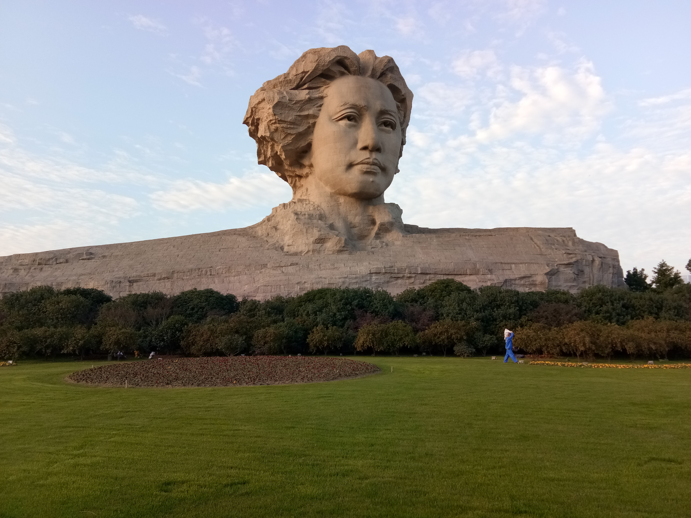

橘子洲 · 长沙按你的节奏手动切换，不自动定位、不倒计时催促。
两天 · 各有一个重点
旅行安排
主景点慢慢看；爱晚亭与饭后散步都可跳过。
交通用时为保守预算；住宿示例待确认，往返车票示例待确认。先保证正餐、取行李与进站缓冲。
路线在这里
离线参考图，不是实时导航。两指操作交给系统地图；此图可单指拖动、按钮缩放。◇ 表示餐饮／闲逛片区。
出发前的小事
出发准备
关键信息一屏看清，勾完清单再出门。
交通与住宿
- 去 示例第一天
- 示例去程 武汉站09:00 → 长沙南10:15（参考）假设时刻，非实际车次
- 回 示例第二天
- 示例返程 长沙南18:30 → 武汉站19:45（参考）假设时刻，非实际车次
- 住宿
- 湘江中路周边（示例）自行选择与预订，无真实订单
示例数据用于功能展示。请按实际票面、住宿和景区官方公告配置自己的旅程。
出发与返程时间详情
宁可删爱晚亭与饭后散步，不压缩正餐、取行李和进站缓冲。没有自动定位、倒计时或订票。
行前清单
0 / 6 已确认
仅记在这台设备，不会代你预约或订票。
随身工具
离线行程没有网络，也能查攻略
正在检查离线可用状态…
保存导游、地图和景区照片；外部导航与官方预约仍需联网。缓存可能被浏览器清理，出发前请断网试开一次。
放到手机主屏幕
上线后，先用手机浏览器打开自己的访问链接。iPhone 可在 Safari 的分享菜单中选择“添加到主屏幕”；安卓可在浏览器菜单找“安装应用”或“添加到主屏幕”。具体菜单随浏览器版本不同。
先完成一次在线保存，再断网确认能打开。当前电脑预览地址不是手机随时访问链接。
预约与资料
岳麓书院官方购票须知 ↗岳麓书院官方游览须知 ↗书院交通与入口说明 ↗预约日期、场次与开放时间以出行当天官方公告为准；本示例没有真实预约。
隐私与使用边界
不采集GPS，不连接旅行账号，不上传浏览进度。查看进度与勾选清单只保存在当前浏览器，换设备不会同步。外部地图只有点击后才会收到地点关键词。
离线副本留在这台设备上，退出在线账号不等于清除副本。共用手机请移除离线副本。不提供自动导游语音或实时位置提醒。
照片署名
橘子洲照片：এম আবু সাঈদ / Wikimedia Commons，CC BY-SA 4.0。原图未修改，页面适配裁切显示。
照片来源 ↗许可说明 ↗